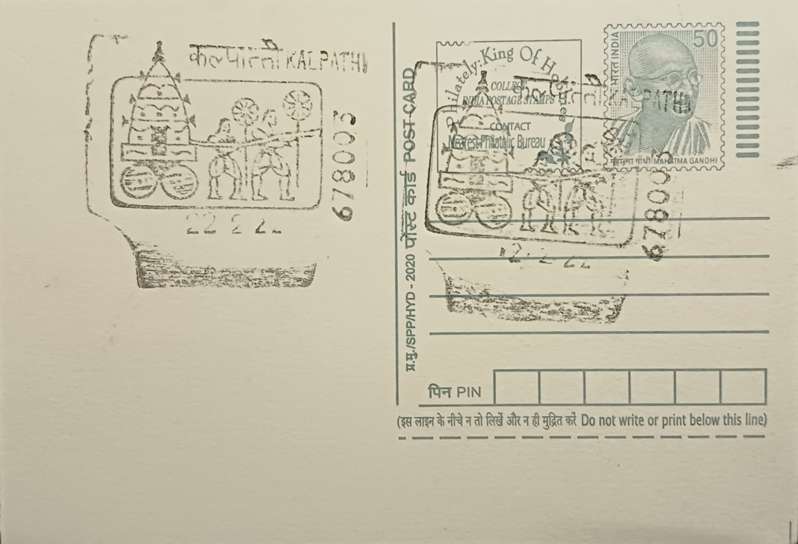

Kalpathi Rathotsavam
കൽപ്പാത്തി രഥോത്സവം


The festival takes its name from Kalpathi, the agraharam (traditional Brahmin settlement) that grew around the Vishwanatha Swamy Temple on the banks of the Nila (Bharathapuzha) river in Palakkad. According to local tradition, the Akathethara rulers of Palakkad, unable to secure local Brahmins willing to perform temple rituals, invited Tamil Brahmin families from Mayavaram near Thanjavur to settle here in the fourteenth century, granting them land that eventually grew into eighteen agraharams across the region. A stone inscription at the Viswanatha Swamy Temple has been dated to around 1425 CE, anchoring the settlement's recorded history, and the Rathotsavam that developed around the temple is held to be roughly seven centuries old, making it one of the longest continuously observed chariot festivals in Kerala.
Kalpathi Rathotsavam is classed among Kerala's major Brahminical temple car festivals, standing apart from the state's more commonly documented Hindu festival traditions because of its distinctly Tamil ritual character, a legacy of the Brahmin migration that founded the settlement. The presiding deities are Lord Shiva, worshipped here as Viswanatha, and his consort Visalakshi (Parvati), and the festival forms the ritual centrepiece of the Kalpathi agraharam's annual calendar. Beyond its religious role, the event is recognised as a marker of Palakkad's composite cultural identity, and Kalpathi itself is noted as a hub of Carnatic music and traditional arts, with the festival drawing pilgrims, tourists, and cultural visitors from across Kerala and Tamil Nadu each year.
The ten-day festival, typically held in November, opens with four days of Vedic recitations, cultural performances, and temple rituals before the chariots are brought out for the final three days. Six wooden temple chariots belonging to four participating temples take part in the procession: the Sri Visalakshi Sametha Viswanatha Swamy temple, the Sri Lakshmi Narayana Perumal temple, the Manthakkara Sree Mahaganapathy temple, and the Chathapuram Sri Prasanna Mahaganapathy temple. The agraharam itself is laid out in two sections, Old and New Kalpathi, flanking the Viswanatha Swamy and Lakshmi Narayana temples respectively, with residential streets oriented so that households have a direct view of the temple at the street's end, a planning pattern tied directly to the processional route the chariots follow.
A distinguishing feature of the festival is the elaborate decoration of the chariots, which are adorned with coloured glasswork, flowers, and fruit by families of traditional craftsmen, the Panickers, who have carried out this work for generations. On the climactic days, thousands of devotees physically haul the towering wooden rathas through the narrow agraharam streets using thick ropes, a spectacle considered one of the most dramatic in Kerala's temple festival calendar given the scale of the chariots relative to the lanes they must be manoeuvred through. The physical intensity and crowd participation involved have made the final day's procession the most widely photographed and attended part of the event.
Kalpathi village has in recent decades also been promoted as a heritage tourism site by the Kerala Tourism department and the Palakkad district administration, which coordinate traffic management, visitor facilities, and cultural programming around the festival dates each year, with the 2025 edition scheduled for mid-November. The agraharam's rows of traditional tiled houses, several over a century old, are maintained largely by resident and non-resident families connected to the original Tamil Brahmin settlers, giving the settlement a living-heritage character distinct from preserved-but-unoccupied monument sites. The Rathotsavam today functions as both an act of worship for the Kalpathi community and a scheduled cultural draw on Kerala's festival tourism circuit, with local temple committees and the district administration jointly managing its logistics each November.
| Date of Introduction | August 22, 2003 |
|---|---|
| Address | Sub Postmaster, |
| Kalpathi SO, | |
| Palakkad (dt.), Kerala - 678003. |